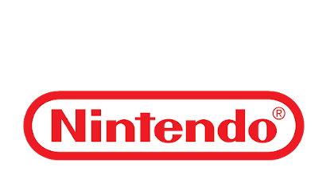
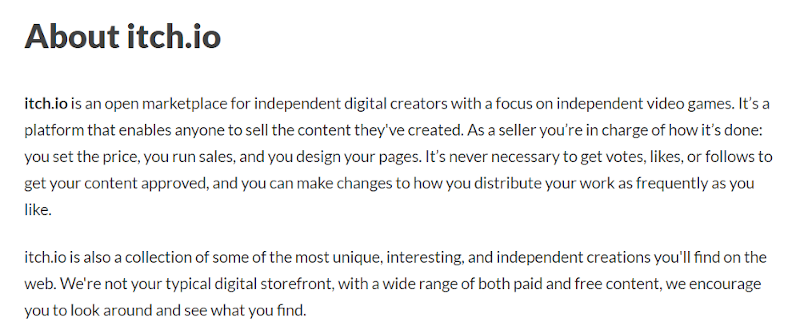

Sometimes the best way to get into video games is by finding cheap or free indie games.
An indie game is "typically created by individuals or smaller development teams without the financial support of a large game publisher...[They] often focus on innovation and taking risks not usually afforded in AAA games, and may explore the medium to produce unique experiences in art games. Indie games tend to be sold through digital distribution channels rather than at retail due to lack of publisher support."
-Wikipedia
In contrast, an AAA game is "produced and distributed by a mid-sized or major publisher, typically having higher development and marketing budgets." -Wikipedia
Some examples of AAA companies are:
EA - Electronic Arts Ubisoft
 Nintendo
AAA games are easy to find and get involved in, because they are widely marketed and are easily recommended by friends. Indie games can be harder to find, because the teams who create them do not have the budget to advertise them. Instead, you have to know that they are out there and where to find them. There are several websites dedicated to hosting game content from anyone who wants to upload it.

itch.io is a very popular site for hosting indie games. They offer a lot of flexibility to small game developers and have proven they really care about their community, which is rare these days.
You can choose from a variety of genres and prices; including free and bundles. Most importantly, anything you pay for a game directly supports small developers. Even with free games, you know
you are playing a game that someone made because they love it.
//insert humble bundle and other indie websites here